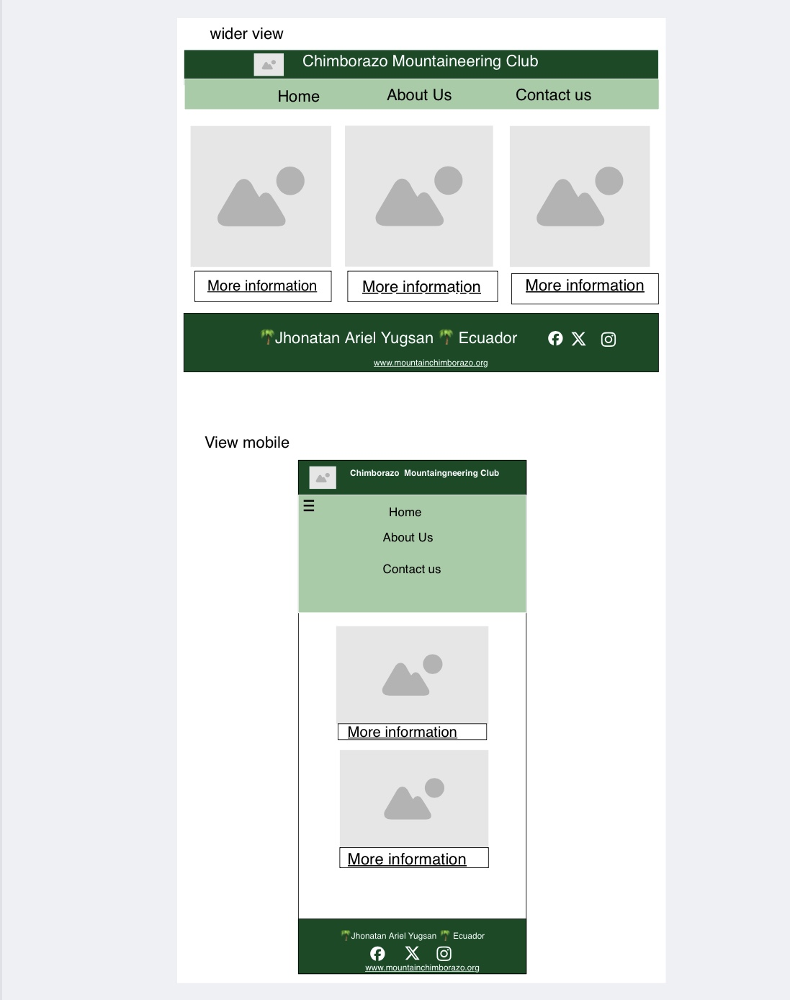

Site Name: Chimborazo Mountaineering Club
1.Overview:
As a Chimborazo mountaineering club, our main purpose is to provide the necessary information to our clients so that they can purchase their adventure kit through our web applications and also so that they can have the best adventure experience by getting to know these places, guaranteeing the safety of their health and well-being.
2.Target Audience:
This website is designed for athletes who are passionate about extreme sports such as hiking, camping, mountain climbing, and other sports, but it is especially aimed at the following groups of people:
1.Groups of sports friends looking for services that offer a kit that includes adventures like these sports in the city of Riobamba
2.families looking to have fun through these sports and through facilitating the necessary requirements of
3.Major Functions:
1.Hamburger dropdown menu:The hamburger drop-down menu allows you to use it on devices such as phones, allowing the user to choose the option they want to do through the website.
2.Review history on the websiteAmong the functions of reviewing the history is that it has the function that there are three main navigation menus among them the history where the client can review and learn more about the history of the website and where it comes from.
3.Contact:Among the functions of reviewing the history is that it has the function that there are three main navigation menus among them the history where the client can review and learn more about the history of the website and where it comes from.
4.Fill out a form:Among other functions that constitute the website, the client can fill out their data by placing everything they wish to receive from our website and the product they chose, all of this creating a functionality through JavaScript.
5.Choosing your adventure kid:The function of choosing the Adventure kit that the person wants to be created through javascript allows you to see how the prices of each adventure kit are made up and thus be able to choose the kit that the client wants.
6.Choose how to contact us:The way to contact our website is to be able to choose the contact mode between the email that will be created WhatsApp and to be able to visit the website so that she can write if she has any questions requesting the website to give her the information that that person wants.
7.Review details of the place you want to visit:The review details feature is one of the important features that will be created with the dialog tag and a menu button that will be on the main page so that the person can see the images of the place that person wants to visit and all the detailed information of the place they want to visit.
8.Review information recorded through the local storeAnother of the main functions that the client will have is that he can review the information that will be registered through the local Store storage of the data that the client has registered
4.Wiraframes:
5.External Data:
Apis: https://screenshotapi.net/docs/getStarted
Apis: https://developer.mapquest.com/documentation/
Among the data that will be stored are the data of the clients who will purchase the kids for their adventure and also when giving functionality to the website
6.Module List:
Data to store:
Data management module:Handle data from a Jason file to interact with the responsive screen of the different places the client wants to visit.
modules of the data that customers will enter into the form:In this section, the data entered by the customer when purchasing their adventure kit will be stored.
animation module:Implement CSS animation of different visualizations for clients
Below we can see an example of a module that will be implemented in the project
Phone number
Sports
Information
export const place = [
{
"name": "",
"location": "",
"altitude": "",
"phone": "",
"website": "" ,
"image": "",
"sport": "" ,
"information": " "
},
7.Graphic Identity
Color Schema:primary color :#004b23
secondary color:#f8f8f8
terciary color:#1CCA5
Headings:primary color :#004b23
Body:secundary color:#f8f8f8
Paragraphs:secondary color:#f8f8f8
accents:secondary color:#f8f8f8
Background:terciary color:#1CCA5
Footer:primary color :#004b23
Typografia:font-family:Arial, Helvetica, sans-serif ;
font-family: Georgia, 'Times New Roman', Times, serif;
Headings:font-family: Arial, Helvetica, sans-serif;
Body:font-family: Arial, Helvetica, sans-serif;
Pragraphs:font-family: Georgia, 'Times New Roman', Times, serif;
Icon(club mountaining)
8.Timeline:
Week 05
-Create the directory folders and structure the main HTML page
-Give styles to the main web page
-Giving functionality to the first web page with JavaScript
Week 06
-Create the three secondary HTML pages for additional navigation to the main page
-Create API modules to provide functionality to the navigation pages.
-Implement JavaScript modules for web pages
Weeek 07
-Make corrections that need to improve the website
-Check and verify that it works correctly
-Review and inspect in overview tools, also check that there are no errors in HTML and CSS.
9.Project Planning
https://trello.com/b/Kp70LA0V/project-final-wdd330s
10.Challenges:
Well, I consider that some of the anticipated challenges that I can see when planning is creating this web page, among them is the implementation of the modules in JavaScript. For me, I sincerely believe that this is one of the biggest challenges in creating a web page specifically with JavaScript, among other functionalities that I will see as I go.